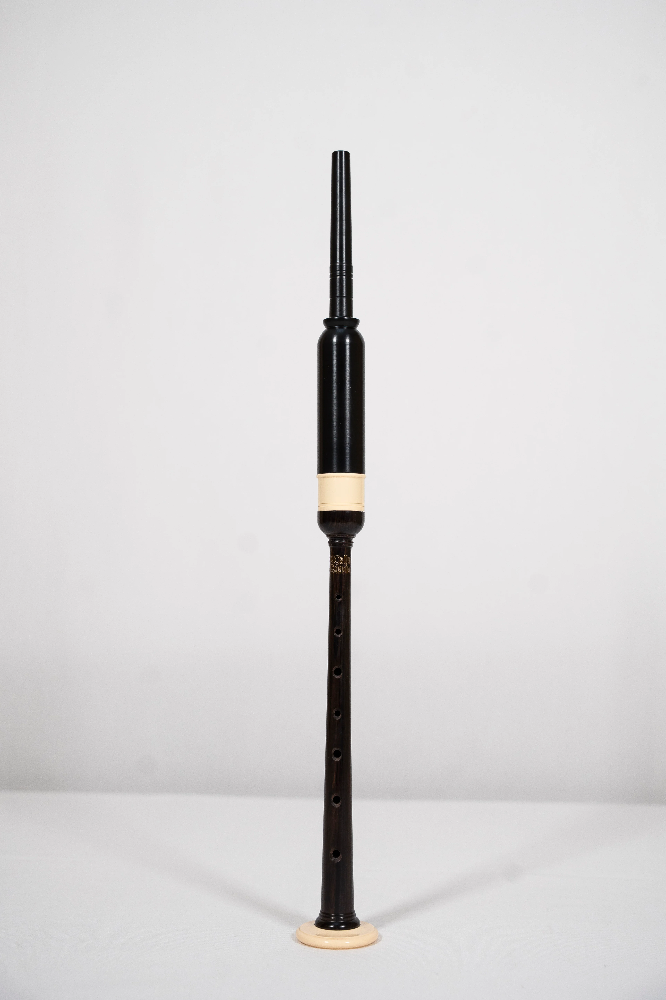

A skót duda tanulása izgalmas út, de fontos tudni, hogy az első lépések általában nem a teljes hangszeren történnek. A jó alapozás türelmet, rendszeres gyakorlást és megbízható iránymutatást kíván. Ha az elején jó szokások épülnek ki, később sokkal könnyebb lesz a teljes dudán tisztán, stabilan és zeneien játszani.
A gyakorlósíp az első hangszer
A kezdők legtöbbször gyakorlósípon, vagyis practice chanteren tanulnak. Ez halkabb, egyszerűbben kezelhető eszköz, amelyen az ujjrend, a dallamok és a díszítések alapjai külön gyakorolhatók. A gyakorlósíp nem kerülőút, hanem a tanulás központi része: ezen alakul ki az a kézügyesség és pontosság, amelyre később a teljes hangszer épül.
Miért érdemes tanárral kezdeni?
A skót duda technikája sok apró részletből áll. Egy tanár már az elején segít abban, hogy a kéztartás, az ujjak mozgása, a ritmus és a díszítések ne rossz beidegződésekre épüljenek. Az interneten sok anyag elérhető, de egy külső fül és szem rengeteget számít, különösen az első hónapokban.
Könyvek és tananyagok
Egy jó alapkönyv segít rendszert vinni a tanulásba. A kezdő anyagok általában fokozatosan vezetnek végig az ujjrenden, az egyszerű dallamokon, majd a legfontosabb díszítéseken. Érdemes olyan könyvet vagy tananyagot választani, amelyhez tanári magyarázat is társul, mert a kotta önmagában nem mindig mutatja meg a skót dudazene karakterét.
Mit érdemes beszerezni az elején?
- Megbízható gyakorlósíp, lehetőleg jó minőségű náddal.
- Metronóm vagy metronóm alkalmazás a biztos ritmushoz.
- Alap tananyag vagy könyv, amely fokozatosan építkezik.
- Jegyzetfüzet vagy digitális napló a gyakorlási célok követéséhez.
Napi rutin, nem rohamtempó
A fejlődéshez nem feltétlenül hosszú, fárasztó gyakorlások kellenek. Sokkal többet ér a rendszeres, figyelmes munka: napi 15-30 perc tiszta fókusz már jó alap lehet. A lassú tempó, a pontos ritmus és a szép díszítések előbb-utóbb összeállnak dallammá.
Mikor jön a teljes duda?
A teljes hangszer akkor kerül igazán előtérbe, amikor az alap ujjrend és néhány dallam már stabilan megy gyakorlósípon. Ekkor kezdődik a levegővezetés, a zsáknyomás, a bordunok és az intonáció külön világa. Ez új kihívás, de jó alapokkal sokkal természetesebb lépés.